📘 🧬 100 Years of Quantum Mechanics (1925–2025)
← Back to the Physics Reading Guide 🧭 ⚛️
← Back to the Physics Section ⚛️
1 📘 🧬 100 Years of Quantum Mechanics (1925–2025)
Historical and conceptual introduction to the hundred years of quantum theory.
1.1 Introduction
In 1925, a new physics was born. One hundred years later, quantum mechanics remains one of the most surprising and fundamental theories ever conceived.
This series explores its origin, evolution, paradoxes, and modern applications.
1.2 Part 1 — Before the Quantum Revolution

1.2.1 📚 The Problem of Light and Energy
At the end of the 19th century, physics was considered practically complete. Lord Kelvin even stated that only a few details remained to be adjusted in the equations of classical physics.
The great theories — Newtonian mechanics, Maxwell’s electromagnetism, and thermodynamics — seemed to describe the world with precision. But three experimental anomalies emerged that shook this confidence:
1.2.1.1 🔥 The Ultraviolet Catastrophe
The radiation emitted by a blackbody — an ideal object that absorbs all incident radiation — followed a well-behaved pattern at low frequencies, but classical physics predictions exploded at high frequencies:
- The Rayleigh–Jeans theory predicted that radiated energy increased indefinitely with frequency;
- This led to an absurd result: infinite energy for any hot body!
This impasse became known as the ultraviolet catastrophe.

➡️ Max Planck (1900) solved the impasse with a radical idea:
Energy is not emitted continuously, but in discrete packets, called quanta.
The proposed formula was: \[
E = h \nu
\] Where:
- \(h \approx 6{,}626 \times 10^{-34}\ \text{J}\cdot\text{s}\) is Planck’s constant;
- \(\nu\) is the frequency of the radiation.
🔍 This proposal marked the beginning of energy quantization, a concept alien to classical physics.
1.2.1.2 ⚡ The Photoelectric Effect
Another inexplicable phenomenon was the emission of electrons by certain metals when illuminated by light.
- Classical physics predicted that increasing the light intensity would always cause electron emission;
- However, it was observed that without a minimum frequency, no electrons were emitted, regardless of intensity!
➡️ Albert Einstein (1905) proposed that light was composed of particles — photons — with energy also given by \(E = h\nu\).
Only photons with sufficient energy (high frequency) could eject electrons.
💡 This explanation, based on light quanta, confirmed the quantization of radiation.
Einstein received the Nobel Prize in 1921 for this work.

Photons (red waves) strike a metallic surface and cause the ejection of electrons.
1.2.1.3 🌌 Bohr’s Atom
The emission spectrum of hydrogen displayed discrete lines — as if electrons could only occupy certain energy levels.
➡️ Niels Bohr (1913) proposed an atomic model in which electrons:
- Orbit the nucleus in quantized energy levels;
- Only emit or absorb light when they jump between these levels.
This theory explained why only certain frequencies appeared in spectra:
\[ \Delta E = E_2 - E_1 = h\nu \]
📌 Bohr’s theory united the concepts of quantization with atomic structure — another blow to classical physics.

The electron jumps from the second to the first energy level, emitting a photon (purple arrow).
1.2.2 🧨 A System in Crisis
These three phenomena — blackbody radiation, the photoelectric effect, and atomic spectra — deeply challenged traditional physics:
- Light behaved like a particle;
- Energy came in discrete amounts;
- Atoms had “quantized” structures.
🧩 The consistency between these ideas and experiments pointed to a new physical reality.
And it finally emerged in 1925, breaking with centuries of classical intuition.
With decisive contributions from Heisenberg, Schrödinger, Born, Dirac, and others, Quantum Mechanics was born — a scientific revolution as profound as those of Copernicus and Newton.
From then on, understanding the atom meant rethinking reality.
1.3 Part 2 — The Revolution Begins (1925)
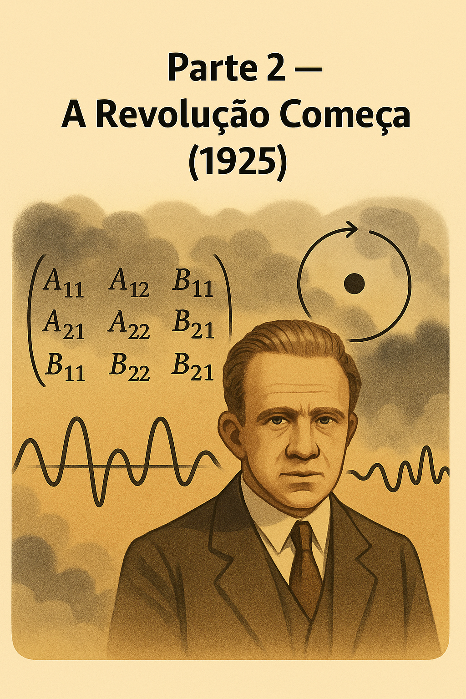
1.3.1 ⚛️ Heisenberg and Matrix Mechanics
In the summer of 1925, Werner Heisenberg, then only 23 years old, introduced a radical new approach to describing atoms. He decided:
🔍 “Physics must be based only on what can be directly observed.”
Instead of trying to visualize electronic orbits — as in Bohr’s model — Heisenberg focused on measurable values, such as frequencies and intensities of emission spectra.
🧠 With the support of Max Born and Pascual Jordan, Heisenberg developed a new mathematical formulation:
Matrix Mechanics, in which physical quantities are represented by matrices — structures that, when multiplied, may not obey commutativity:
\[ \hat{A} \hat{B} \neq \hat{B} \hat{A} \]
⚠️ This was shocking: in the quantum world, the order of operations matters!
1.3.2 🔄 Physical Consequences
This non-commutative behavior foreshadowed one of the pillars of quantum physics:
the Uncertainty Principle, formulated by Heisenberg two years later (in 1927).
💡 Instead of well-defined trajectories, the new theory predicted transition probabilities between states — a more uncertain, yet measurable world.
1.3.3 📌 A New Paradigm
The proposal was bold, abstract, and initially hard to accept.
But it successfully reproduced atomic spectra and matched experimental data.
🌟 In 1925, Quantum Mechanics was formally born — inaugurating an era in which particle behavior would be described by non-classical mathematical structures.
1.4 🧮 Observables and Matrix Mechanics
1.4.1 🔍 What are observables?
In quantum mechanics, observables are measurable physical quantities of a system, such as:
- position (\(x\)),
- momentum (\(p\)),
- energy (\(E\)),
- spin,
- angular momentum,
- particle number, etc.
In classical physics, each observable is a real number that can be measured precisely — for example, a body has mass \(m = 2{,}0\,\mathrm{kg}\) and position \(x = 1{,}5\,\mathrm{m}\).
In quantum physics, each observable is represented by a mathematical operator (or a matrix, in the case of matrix mechanics), and measurement does not return a fixed value but rather a probabilistic outcome.
1.4.2 🧠 Heisenberg’s Proposal
Werner Heisenberg proposed completely abandoning any attempt to describe trajectories or imagine what is “happening behind the scenes” of measurements.
He decided to base the theory only on quantities that can be experimentally observed: transitions between energy levels.
These transitions can be described by frequencies \(\omega_{mn}\), associated with the emission or absorption of photons when the system goes from state \(m\) to state \(n\).
1.4.3 📐 Matrices Enter the Scene
When trying to organize these transitions, Max Born realized that the values associated with observables formed tables of numbers with two entries: from one state \(m\) to another \(n\).
These tables had the structure of matrices: an observable becomes a matrix \(\hat{A} = [A_{mn}]\), where each element represents the “link” between two quantum states.
These matrices obey non-commutative multiplication rules, that is:
\[ \hat{A}\hat{B} \neq \hat{B}\hat{A} \]
This unusual property reflects a fundamental feature of the quantum world.
1.4.4 🔄 Example: Position and Momentum
In classical mechanics, position \(x\) and momentum \(p\) are independent quantities.
But in quantum mechanics, they are related by a fundamental commutation relation:
\[ [\hat{x}, \hat{p}] = \hat{x}\hat{p} - \hat{p}\hat{x} = i\hbar \]
This relation is the mathematical basis of Heisenberg’s Uncertainty Principle, which states:
It is not possible to know with arbitrary precision both the position and the momentum of a particle at the same time.
1.4.5 🧠 Impact of Matrix Mechanics
Matrix mechanics was:
- The first coherent mathematical formulation of quantum mechanics;
- Completely different from classical mechanics;
- Capable of successfully predicting atomic spectra and energy transitions;
- Initially considered strange and abstract — until Schrödinger showed that his wave mechanics was equivalent.
1.4.6 📊 Summary Table: Classical vs. Quantum Observables
| Concept | Classical Mechanics | Quantum Mechanics |
|---|---|---|
| Observables | Real numbers | Operators (or matrices) |
| Measurement | Deterministic | Probabilistic |
| Commutativity | \(AB = BA\) | \(\hat{A} \hat{B} \neq \hat{B} \hat{A}\) |
| Trajectories | Well-defined | Undefined; only probabilities |
| Examples | \(x, p, E\) | \(\hat{x}, \hat{p}, \hat{H}\) |
1.4.7 🧭 Conclusion
Matrix mechanics introduced the idea that microscopic reality is not deterministic, but probabilistic and governed by non-commutative algebraic relations between observables.
This approach was essential for the emergence of the modern formalism of Quantum Mechanics, still used today in particle physics, quantum chemistry, and emerging technologies such as quantum computing.
1.5 Part 3 — Schrödinger and the Wave Function
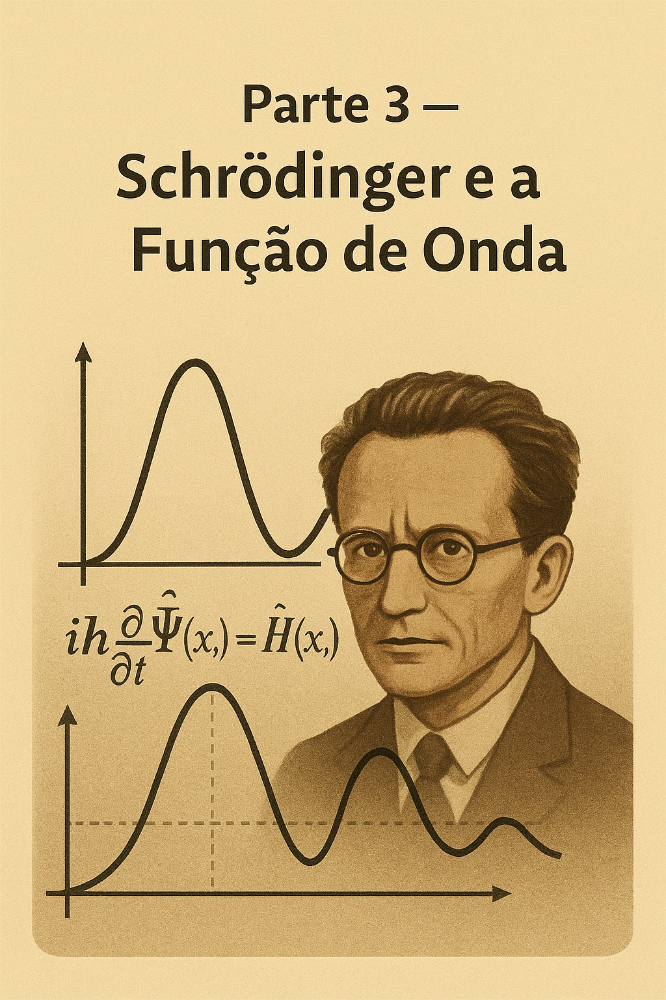
1.5.1 🌊 The Schrödinger Equation
In 1926, Erwin Schrödinger proposed a new approach to describe the behavior of particles in the microscopic world — using differential equations inspired by wave theory.
The equation that bears his name is one of the pillars of Quantum Mechanics:
\[ i\hbar \frac{\partial}{\partial t} \Psi(x, t) = \hat{H} \Psi(x, t) \]
Where:
- \(i\) is the imaginary unit;
- \(\hbar\) is the reduced Planck constant (\(\hbar = \frac{h}{2\pi}\));
- \(\Psi(x, t)\) is the particle’s wave function;
- \(\hat{H}\) is the Hamiltonian operator (total energy of the system).
1.5.2 ⚙️ What is the operator \(\hat{H}\)?
The Hamiltonian \(\hat{H}\) is the operator that represents the total energy of a quantum system.
In the Schrödinger equation:
\[ i\hbar \frac{\partial}{\partial t} \Psi(x, t) = \hat{H} \Psi(x, t) \]
the operator \(\hat{H}\) governs the time evolution of the wave function \(\Psi(x, t)\). It acts on the wave function like an instruction: it tells how the state of the system changes over time.
1.5.3 🔬 Physical Interpretation
- \(\hat{H}\) represents the sum of kinetic energy and potential energy of the particle (or system of particles);
- When applied to \(\Psi\), it “extracts” information about the energy content of the quantum state;
- Its eigenvalues \(E_n\) are the possible energy levels of the system:
\[ \hat{H} \Psi_n = E_n \Psi_n \]
This equation is called the time-independent Schrödinger equation (or the Hamiltonian eigenvalue problem).
1.5.4 📐 Classic Example: Particle in One Dimension
For a particle of mass \(m\) in one dimension, subject to a potential \(V(x)\), the Hamiltonian is:
\[ \hat{H} = -\frac{\hbar^2}{2m} \frac{d^2}{dx^2} + V(x) \]
- The first term represents the kinetic energy (with the momentum operator \(\hat{p} = -i\hbar \frac{d}{dx}\));
- The second term, \(V(x)\), is the potential energy.
1.5.5 🧠 Fundamental Role in the Theory
- The Hamiltonian is the generator of time evolution;
- It is essential in the formulation of bound systems (such as the hydrogen atom), many-body systems, and in relativistic quantum mechanics (as in the Dirac equation);
- It also appears in the formalism of quantum mechanics in Hilbert spaces, statistical mechanics, and quantum field theory.
1.5.6 📊 Summary Table: Operator \(\hat{H}\)
| Concept | Meaning |
|---|---|
| \(\hat{H}\) | Hamiltonian operator |
| Function | Represents the total energy of the system |
| Equation | \(\hat{H} \Psi = E \Psi\) (energy eigenvalues) |
| Typical structure | \(\hat{H} = \hat{T} + \hat{V}\), with kinetic + potential |
| Role | Generates the time evolution of the quantum state |
| Appears in… | Schrödinger equation, quantum theory, QED, etc. |
1.5.7 🧲 In Summary
The operator \(\hat{H}\) is the dynamic heart of quantum mechanics.
It describes how a system’s state evolves over time and what possible energy values we can observe.
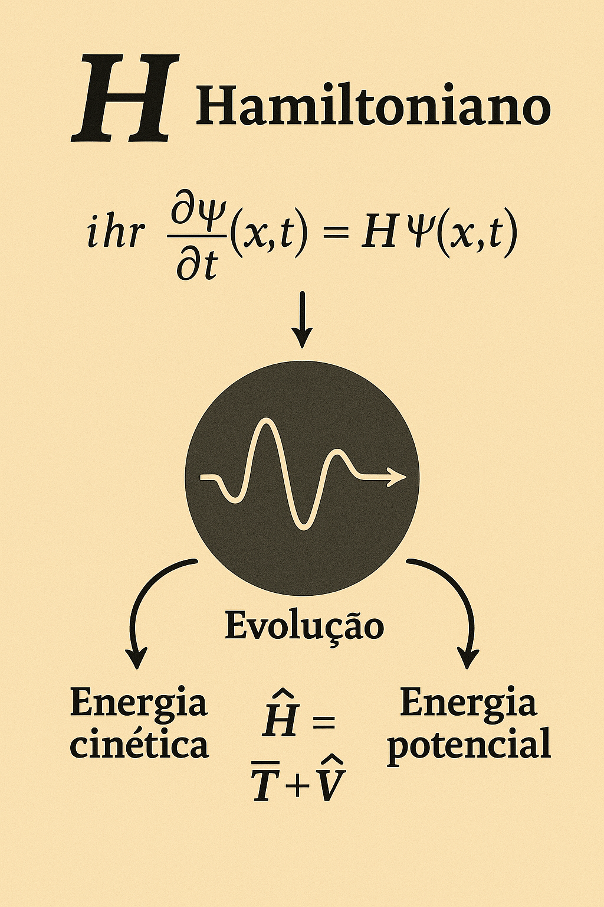
The operator \(\hat{H}\) generates the time evolution of the quantum system, being composed of kinetic and potential energy. It appears at the center of the Schrödinger equation, driving the dynamics of the wave function.
1.5.8 📌 Physical Interpretation
Schrödinger’s great innovation was to treat the particle as a matter wave, instead of a point with a well-defined trajectory.
The function \(\Psi(x, t)\), though complex, contains all the information about the system.
🎯 The square modulus of the wave function, \(|\Psi(x, t)|^2\), represents the probability density of finding the particle at position \(x\) at time \(t\).
This probabilistic interpretation marked a rupture with classical determinism.
1.5.9 🔄 Two Paths, One Destination
At the same time, Heisenberg’s matrix mechanics and Schrödinger’s wave mechanics seemed like very different proposals:
- Heisenberg worked with abstract matrices and observables;
- Schrödinger described waves evolving in spacetime.
💡 But it was soon proven that both approaches were equivalent — simply different mathematical languages describing the same physical phenomena.
1.5.10 📈 A New Universe
With the Schrödinger equation, it became possible to predict the behavior of complex quantum systems:
- Atoms with multiple electrons;
- Molecules;
- Bound states and quantized energy.
🔬 This formulation enabled a giant leap in the understanding of matter — and paved the way for technologies such as semiconductors, lasers, and even quantum computing.
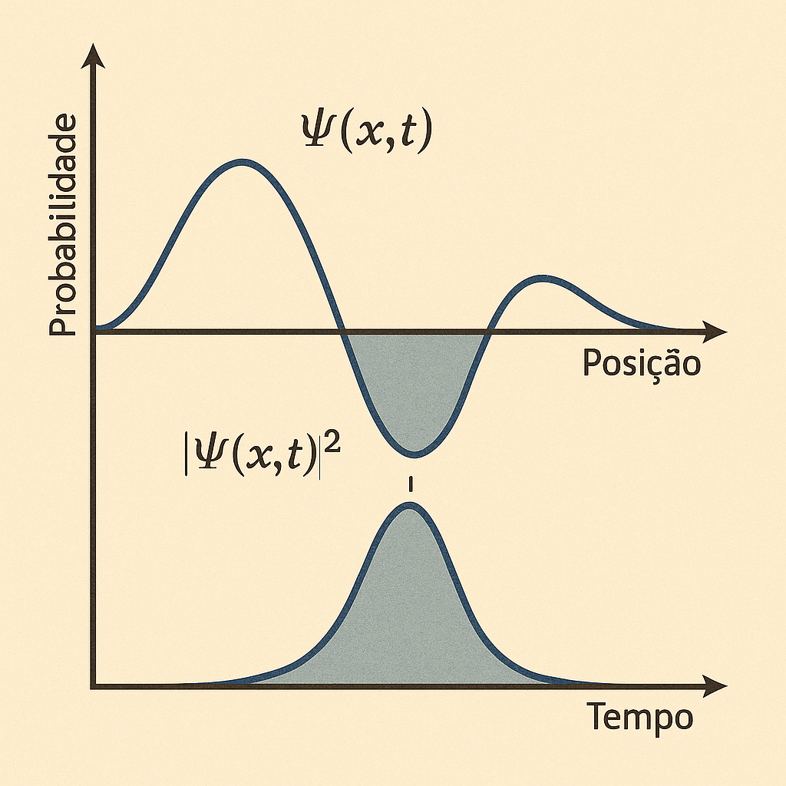
The function \(\Psi(x, t)\) may take complex values, but its squared modulus, \(|\Psi(x, t)|^2\), provides the probability density of finding the particle.
1.6 Part 4 — Uncertainty and Paradox
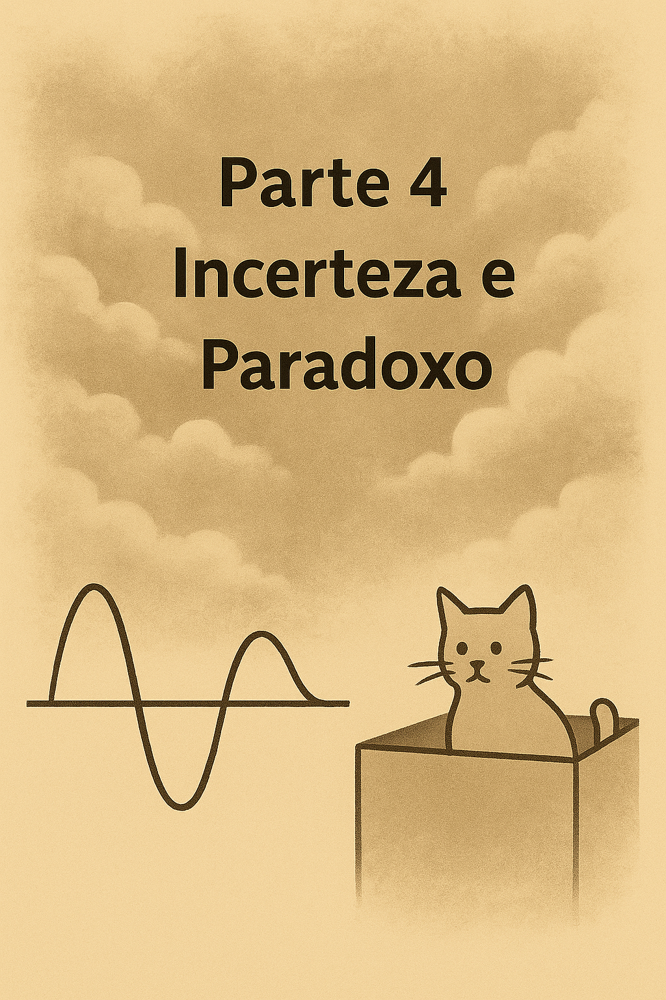
1.6.1 🔄 The Uncertainty Principle
In 1927, Werner Heisenberg presented one of the most revolutionary ideas of modern physics: the Uncertainty Principle.
\[ \Delta x \cdot \Delta p \geq \frac{\hbar}{2} \]
This means that the more precisely we know the position (\(\Delta x\)) of a particle, the less we know about its momentum (\(\Delta p\)) — and vice versa.
⚠️ This uncertainty is not a flaw of the instruments, but a fundamental limitation of nature.
1.6.2 🎯 What Does This Change?
In classical physics, we can, in principle, measure everything with infinite precision.
But in the quantum world, the very idea of “knowing everything about a particle” ceases to make sense.
🔍 Uncertainty is not a defect of the theory, but a consequence of the mathematical structure of quantum mechanics — linked to the non-commutativity of observables:
\[ [\hat{x}, \hat{p}] = i\hbar \]
1.6.3 🐱 Schrödinger’s Cat
In 1935, Erwin Schrödinger proposed a thought experiment to illustrate the conceptual problems of quantum mechanics: the famous Schrödinger’s Cat.
Imagine a cat locked in a box with a mechanism that depends on the decay of a radioactive atom (a random quantum event).
If the atom decays, poison is released and the cat dies. Otherwise, the cat lives.
1.6.4 ❓ The Paradox
According to the most common quantum interpretation (Copenhagen), while the box remains closed, the system is in a superposition of two states:
- cat alive
- cat dead
🧩 Only when the box is opened and observed does the state collapse into one of the possibilities.
1.6.5 💬 Deep Reflections
This paradox raises fundamental questions:
- Does the wave function describe reality itself or just our knowledge of it?
- Does the observer play an active role in defining reality?
- Is there an objective reality before measurement?
These questions remain at the heart of quantum mechanics interpretations to this day.
While the box is closed, the cat is in a state of superposition: alive and dead at the same time, until observation occurs.
1.7 Part 5 — Interpretations and Entanglement
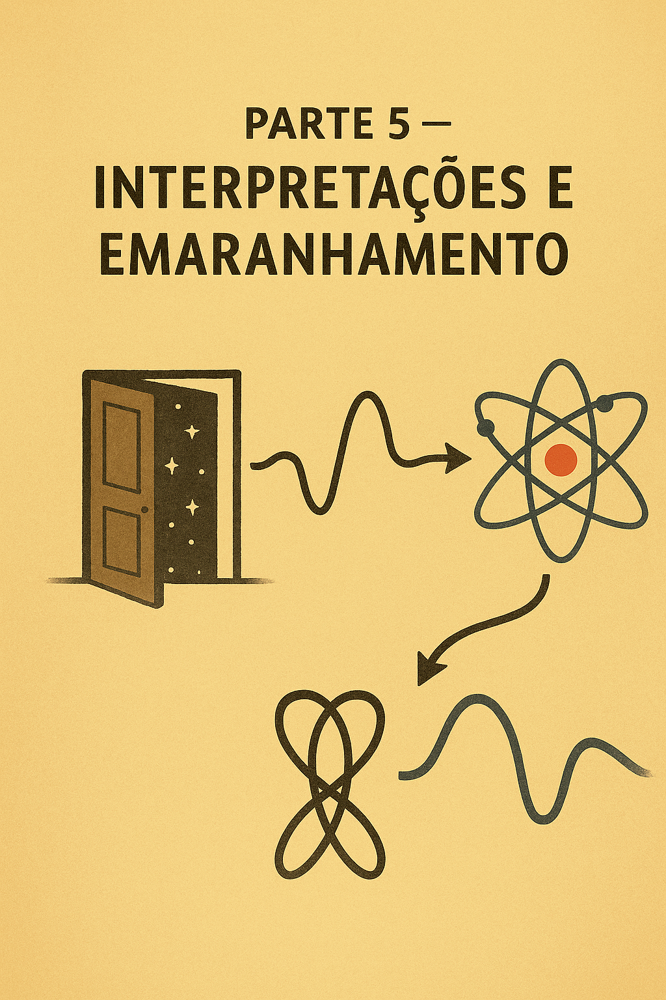
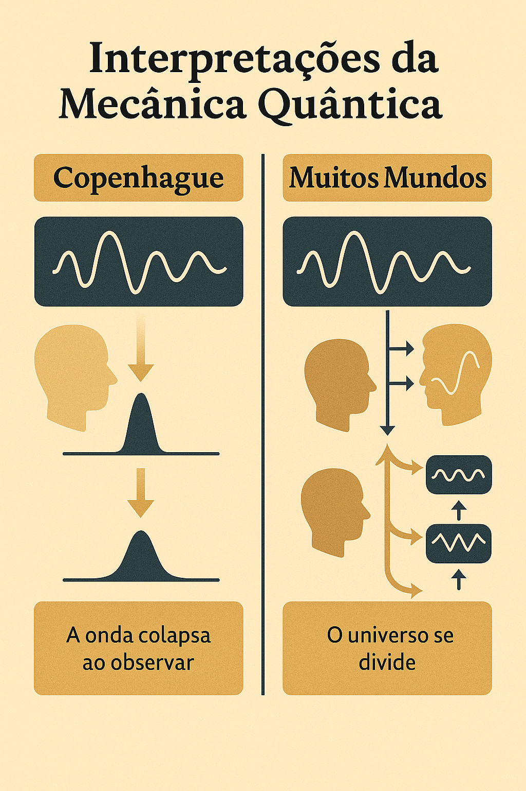
On the left, the Copenhagen interpretation: the wave function collapses upon observation.
On the right, the Many Worlds interpretation: each possibility generates a parallel universe.
1.7.1 🏛️ Copenhagen vs. Many Worlds
Since the birth of Quantum Mechanics, one crucial question remains:
What exactly does the wave function mean?
Schrödinger’s equation predicts how \(\Psi(x,t)\) evolves.
But what happens when a measurement is made?
Two major schools of thought emerged to try to answer:
1.7.1.1 🏛️ Copenhagen Interpretation
Formulated by Bohr and Heisenberg, it is the most traditional.
- The wave function represents our knowledge about the system;
- The collapse of the wave function occurs at the moment of measurement;
- Before that, the system is in a superposition of states.
🧩 Reality, therefore, is not defined until it is observed.
This interpretation works very well in practice, but raises profound philosophical questions:
What counts as “measurement”? Does the observer alter reality?
1.7.1.2 🌌 Many Worlds Interpretation (Everett, 1957)
Hugh Everett III proposed a radical idea:
> The wave function never collapses.
Instead:
- All outcomes happen simultaneously;
- The universe branches into multiple realities, one for each possibility.
➡️ Each time a measurement occurs, the observer “splits” along with the universe.
This interpretation eliminates collapse — but at the cost of admitting an infinity of parallel universes.
1.7.2 🧲 Quantum Entanglement
The phenomenon of entanglement occurs when two quantum particles share a common state, even if separated by great distances.
- Measuring one particle instantly affects the other, no matter how far apart they are.
Einstein rejected this idea, calling it
“spooky action at a distance.”
1.7.3 🧪 Tests and Evidence
The theory was put to the test:
In 1964, John Bell formulated a theorem with testable inequalities:
➡️ If quantum mechanics is correct, certain correlations violate classical laws.In 1982, Alain Aspect conducted experiments that confirmed quantum predictions — violating Bell’s inequalities.
📌 Result: entanglement is real, and cannot be explained by local hidden-variable theories.
1.9 🧩 Qubits: Concept and Intuition
| Concept | Description |
|---|---|
| Qubit | Unit of quantum information (quantum bit) |
| States | Can be in 0, 1, or a superposition of both |
| Superposition | A qubit can simultaneously represent both states |
| Entanglement | Multiple qubits can become entangled, with interdependent states |
| Measurement | When measuring a qubit, it “collapses” to 0 or 1, with certain probabilities |
1.9.1 💡 Intuition
- A classical bit is like a switch: on (1) or off (0);
- A qubit is like a compass needle that can point in any direction — a state represented on the Bloch sphere.
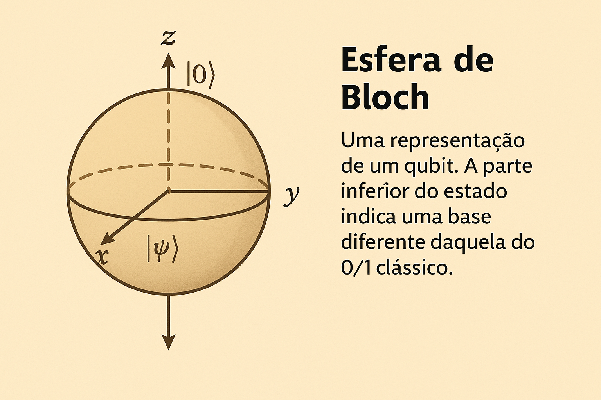
The Bloch sphere represents all possible states of a qubit as points on the surface of a unit sphere. The states \(|0⟩\) and \(|1⟩\) are at the north and south poles, while superposition states lie in between.
1.10 🌫️ Quantum Decoherence
Decoherence is the process by which a quantum system loses its quantum properties — such as superposition and entanglement — when it interacts with the environment.
1.10.1 🧠 Intuition
A qubit in superposition: \[ |\Psi\rangle = \alpha|0\rangle + \beta|1\rangle \]
When it comes into contact with the environment (light, heat, noise…), this superposition breaks down, and the system begins to behave as if it were in a single classical state.
1.10.2 📉 What Causes Decoherence?
- Photons, vibrations, temperature;
- Any exchange of information with the environment;
- Even without direct measurement, the environment already interferes.
1.10.3 📊 Summary Table
| Concept | Short Explanation |
|---|---|
| Decoherence | Loss of quantum properties due to interaction with the environment |
| Cause | Noise, light, heat, external particles |
| Effect | The system becomes classical: loses superposition and entanglement |
| Importance | Explains why we don’t see quantum effects in everyday objects |
🔍 Decoherence connects the quantum world to the classical world — explaining why an electron can be in two places at once, but a cat cannot.
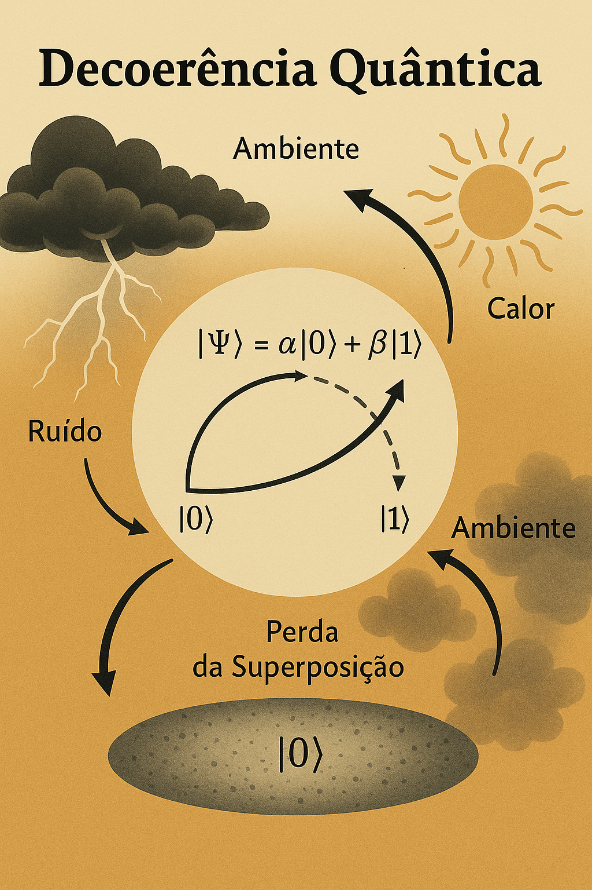
1.11 Part 6 — One Hundred Years of Quantum Mechanics
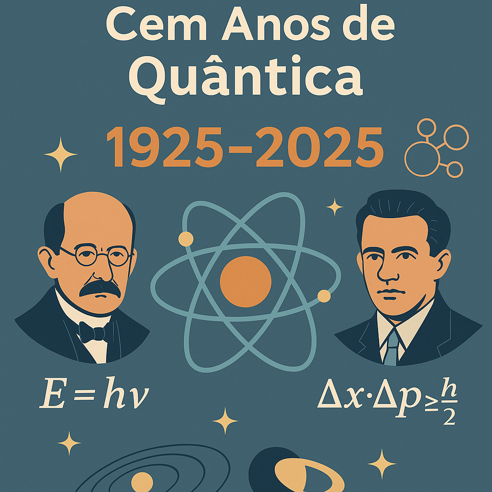
1.11.1 🎉 Technological Achievements
Quantum Mechanics, despite its counterintuitive concepts, is one of the most successful theories in the history of science. Its impact goes far beyond theoretical physics:
- Lasers: based on stimulated quantum transitions between energy levels;
- GPS: requires relativistic and quantum corrections to function accurately;
- Electronic chips: work thanks to the quantum mechanics of semiconductors;
- Magnetic Resonance Imaging (MRI): uses spin and energy transitions to generate images of the body;
- LEDs, solar panels, quantum sensors, atomic clocks…
🔬 The theory of Quantum Electrodynamics (QED), formulated by Feynman, Schwinger, and Tomonaga, is the most precise in history:
> Predictions agree with experiments up to the 12th decimal place.
1.11.2 🧠 Open Mysteries
Even with so many successes, quantum mechanics still defies our intuition. Major questions remain:
🌀 What causes the collapse of the wave function?
The act of observation? Decoherence? Something deeper?🌌 How to unify gravity with quantum mechanics?
General Relativity and Quantum Mechanics are the two great pillars of modern physics — but they still do not coexist peacefully.
The search for a Quantum Theory of Gravity, such as loop quantum gravity or String Theory, is one of the greatest challenges of the century.
1.11.3 🔮 The Future of Quantum Physics
We are entering the so-called Second Quantum Revolution, where we use quantum effects not just to understand, but to control and build technologies:
- Quantum computers with hundreds or thousands of qubits;
- Simulation of complex molecules, accelerating the discovery of new medicines;
- Unbreakable quantum cryptography, based on entanglement and Bell’s theorem;
- Ultraprecise quantum sensors, with applications in geology, medicine, navigation, and space exploration.
Quantum physics is no longer “just theory”: it is shaping the future of technology and human knowledge.
1.11.4 📜 Timeline of Quantum Mechanics
| Year | Milestone |
|---|---|
| 1900 | Max Planck introduces energy quantization |
| 1905 | Einstein proposes the photon (photoelectric effect) |
| 1925 | Heisenberg formulates matrix mechanics |
| 1926 | Schrödinger proposes the wave equation |
| 1927 | Uncertainty Principle and Solvay Congress |
| 1935 | EPR Paradox and Schrödinger’s Cat |
| 1964 | Bell’s Theorem and the limits of local realism |
| 1982 | Aspect confirms entanglement in the laboratory |
| 2025 | 🎉 One hundred years since the founding of Quantum Mechanics |
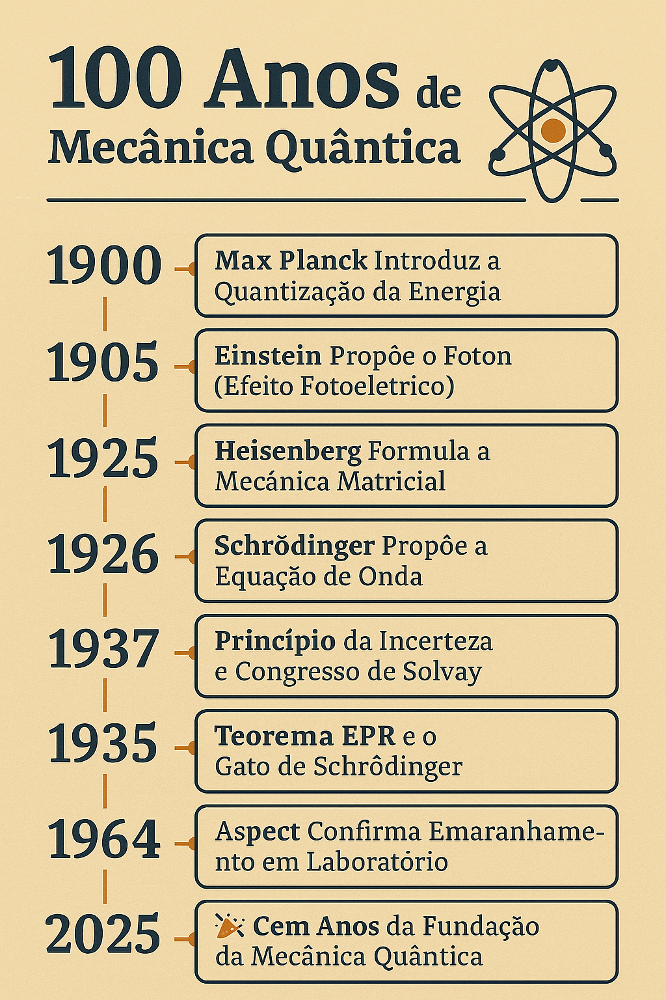
A journey of discoveries — from Planck’s quantization to Aspect’s entanglement.
🎉 Quantum physics celebrates a century of scientific revolution!
1.12 🔚 Conclusion
Quantum Mechanics is not just a theory about the very small — about atoms, particles, and laboratory experiments.
It is, in fact, a new way of seeing the world.
Over the last century, it has opened windows to realities that defy common sense:
- An electron can be in several places at once;
- Measuring something changes what is being measured;
- Distant particles can be entangled, acting as if they were one;
- And yet, everything works with almost absolute precision.
🔬 Quantum Mechanics is at once mathematically rigorous and philosophically unsettling.
It revealed that there are limits to what we can know, and that nature, at its most fundamental level, is not made of certainties, but of probabilities, amplitudes, and subtle interactions.
More than that: it has become an essential tool for human progress.
It is present in lasers, computers, satellites, and even in the keyboards and screens through which you are reading this text.
“The true mystery of the world is not the invisible.
It is the visible that seems so strange when looked at closely.”
🔭 One hundred years later, Quantum Mechanics continues to teach us to see the familiar with new eyes — and to understand that, deep down, reality is stranger, more beautiful, and deeper than we ever imagined.
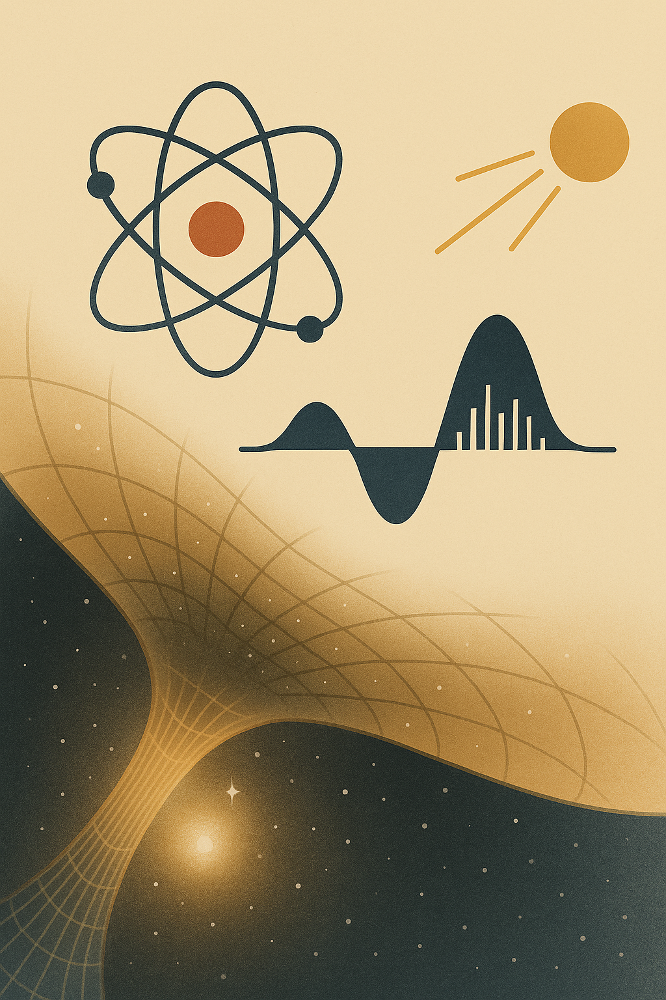
The wave, the atom, the photon, and the curvature of spacetime —
symbolic representations of a century of quantum discoveries that transformed our view of the universe.
2 📘 Further Reading
Want to go deeper into the series?
👉 Access the complete series on 100 Years of Quantum Mechanics
← Back to the Physics Reading Guide 🧭 ⚛️
← Back to the Physics Section ⚛️
Blog do Marcellini — Exploring Physics with Rigor and Beauty.
Created by Blog do Marcellini with ❤️ and code.